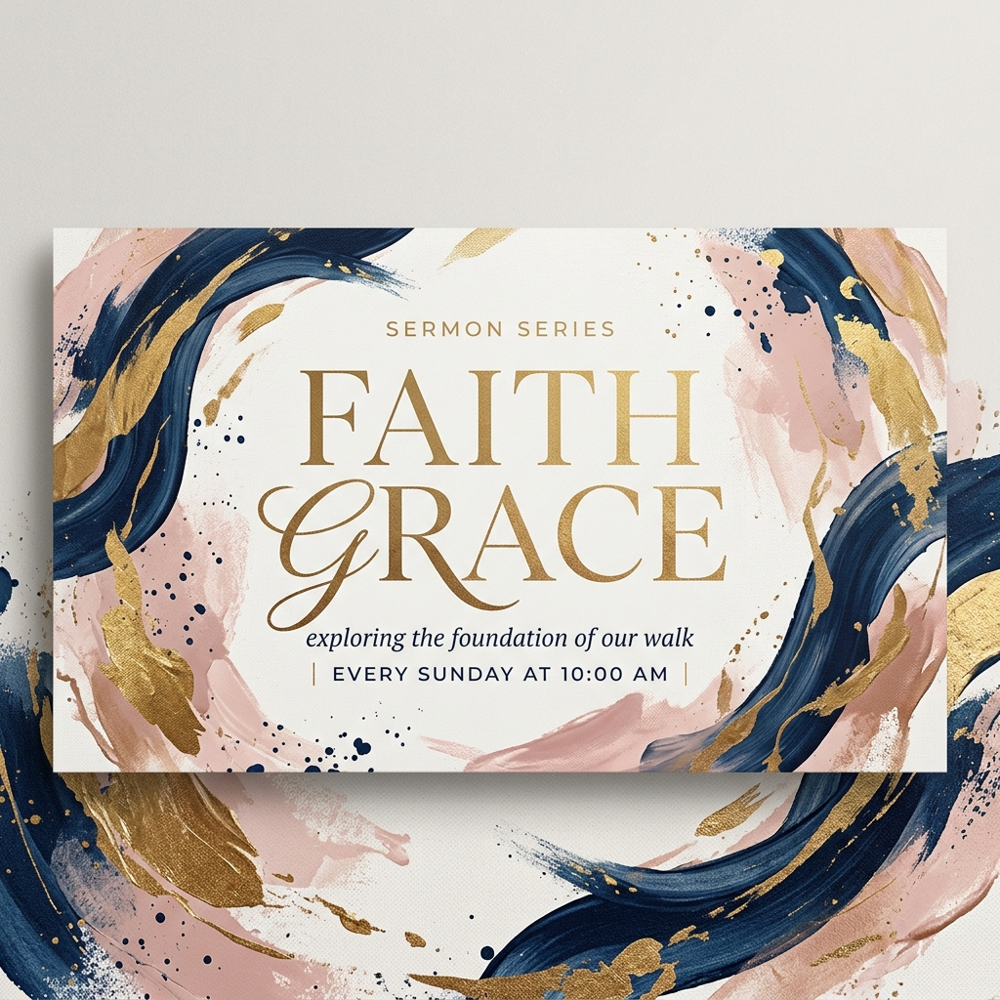

విశ్వాసం, నిరీక్షణ మరియు క్రీస్తు ప్రేమలో ఎదగండి.
మేము ముంబై నగరంలో ఉన్న తెలుగు మాట్లాడే క్రైస్తవ సంఘం. దేవుని వాక్యాన్ని నేర్చుకోవడానికి, సేవ చేయడానికి మరియు ఒకరికొకరు తోడుగా ఉండటానికి మాతో చేరండి.
ఆరాధన సమయాలు
ప్రతి ఆదివారం ఉదయం 9:00 & 11:00 గంటలకు
వ్యక్తిగతంగా & ఆన్లైన్ ద్వారావిశ్వాసంతో కేంద్రీకృతమై.. ప్రేమతో అనుసంధానించబడి..
ఆంధ్ర క్రిస్టియన్ చర్చ్లో, మీ ఆధ్యాత్మిక ప్రయాణంలో మీరు ఎక్కడ ఉన్నా సరే, ప్రతి ఒక్కరికీ మా తలుపులు ఎల్లప్పుడూ తెరిచే ఉంటాయి.
మేము ముంబైలోని తెలుగు క్రైస్తవ విశ్వాసుల కోసం ప్రత్యేకమైన ఆరాధనలను అందిస్తున్నాము. దేవుని వాక్యం ద్వారా ఒకరినొకరు బలపరుచుకుంటూ, ముంబై మహానగరంలో క్రీస్తు ప్రేమకు సాక్ష్యాలుగా నిలబడటమే మా ధ్యేయం. చర్చి అంటే కేవలం ఒక భవనం కాదు—మన నగరాన్ని మెరుగైన ప్రదేశంగా మార్చడానికి కలిసి పనిచేసే విశ్వాసుల కుటుంబం అని మేము నమ్ముతున్నాము.
అపారమైన కృప
క్రీస్తు మనలను ప్రేమించినట్లే మేము కూడా ప్రతి ఒక్కరినీ బేషరతుగా ప్రేమిస్తాము మరియు ఆహ్వానిస్తాము.
నిజమైన సహవాసం
కలసి జీవించడం ఎంతో ధన్యం. విశ్వాసులంతా ఒకే కుటుంబంగా సహవాసంలో పాలుపంచుకుంటాము.
తాజా సందేశాలు
దేవుని వాక్య బోధనలను వినండి మరియు మీ ఆధ్యాత్మిక జీవితంలో ఎదగండి.

ప్రస్తుత సిరీస్కృపతో నడవడం
పాస్టర్ శామ్యూల్ హారిస్ • సిరీస్: విశ్వాసం & కృప (భాగం 3)
ఇటీవలి ప్రసంగాలు
కృపతో నడవడం
పాస్టర్ శామ్యూల్ హారిస్ • జూన్ 14, 2026
శ్రమలలో దేవుని బలం
పాస్టర్ శామ్యూల్ హారిస్ • జూన్ 07, 2026
గందరగోళంలో దేవుని శాంతి
పాస్టర్ జేన్ డో • మే 31, 2026
నిరంతర ప్రార్థన శక్తి
పాస్టర్ జేన్ డో • మే 24, 2026
మా పరిచర్యలు
మా చర్చిలో వివిధ వయస్సుల వారి కోసం ప్రత్యేకమైన పరిచర్యలు ఉన్నాయి. మాతో చేరండి.
గ్రేస్ కిడ్స్ (వయస్సు 0-11)
పిల్లలకు సురక్షితమైన, సంతోషకరమైన మరియు ఆకర్షణీయమైన రీతిలో బైబిల్ సత్యాలను బోధించడం.
ఆదివారం ఆరాధనల సమయంలో పిల్లల కోసం ప్రత్యేకమైన క్లాసులు ఉంటాయి. శిక్షణ పొందిన ఉపాధ్యాయులు ఆటలు, పాటలు మరియు కథల ద్వారా దేవుని వాక్యాన్ని అర్థమయ్యేలా వివరిస్తారు. పిల్లలు ఆధ్యాత్మిక విలువలతో పెరగడానికి మేము తోడ్పడుతాము.
మీ బిడ్డను నమోదు చేయండిఆదివారాలు ఉదయం 9:00 & 11:00 గంటలకు
ఆరాధన ప్రారంభానికి 15 నిమిషాల ముందే పిల్లల చెక్-ఇన్ ప్రారంభమవుతుంది.
గ్రేస్ యూత్ (తరగతులు 6-12)
యవ్వన కాలంలో దేవుని యందు భయభక్తులు కలిగి ఉండి, క్రీస్తులో బలపడేలా యువతను ప్రోత్సహించడం.
ప్రతి వారం ప్రత్యేక కూడికలు, బైబిల్ స్టడీలు మరియు సరదా ఆటలు ఉంటాయి. యవ్వనస్థులు ఎదుర్కొనే సమస్యల గురించి చర్చించి, దేవుని వాక్యం ద్వారా సరైన మార్గాన్ని చూపడమే మా లక్ష్యం.
యువజన కూడికలో చేరండిప్రతి బుధవారం రాత్రి 7:00 గంటలకు
యూత్ ఆడిటోరియంలో ప్రత్యేక హ్యాంగ్అవుట్స్ మరియు ప్రార్థనలు.
యంగ్ అడల్ట్స్ (వయస్సు 18-30)
ఉద్యోగ, వివాహ మరియు జీవిత నిర్ణయాలను విశ్వాసంతో తీసుకునేలా యువతీ యువకులకు తోడ్పడటం.
మా యంగ్ అడల్ట్స్ పరిచర్య నెలవారీ కూడికలు, స్నేహపూర్వక కమ్యూనిటీ సమూహాలు మరియు ప్రత్యేక చర్చలను నిర్వహిస్తుంది. ఇది సమాజంలో క్రైస్తవ సాక్షులుగా ఎలా జీవించాలో నేర్పుతుంది.
మాతో భాగస్వామ్యం అవ్వండిప్రతి మంగళవారం రాత్రి 7:30 గంటలకు
గృహ కూడికలు మరియు ప్రత్యేక చర్చా సమూహాలు.
సేవా పరిచర్య & మిషన్లు
మన సమాజానికి సేవ చేయడం మరియు క్రీస్తు సువార్తను అందరికీ పంచడం.
మేము ముంబై నగరంలోని అనాథ శరణాలయాలు, పేదల అవసరాలకు తోడ్పడుతూ సేవా కార్యక్రమాలను నిర్వహిస్తాము. వారపు ఆహార పంపిణీతో పాటు స్వచ్ఛంద వైద్య శిబిరాలు, సహాయ కార్యక్రమాలు ఉన్నాయి.
స్వచ్ఛంద సేవకుడిగా చేరండిశనివారపు సేవా ప్రాజెక్టులు
నెలవారీ సిటీ-వైడ్ సహాయ ప్రాజెక్టులలో మాతో కలిసి పనిచేయండి.
రాబోయే కార్యక్రమాలు
తేదీలు గుర్తుంచుకోండి! మా ఆంధ్ర క్రిస్టియన్ చర్చ్లో జరిగే ప్రత్యేక కార్యక్రమాలు.
వేసవి యువజన శిబిరం
ఉదయం 9:00 - సాయంత్రం 5:00
టీనేజర్ల కోసం ఐదు రోజుల ప్రత్యేక వేసవి అనుభవం. ప్రార్థనలు, దైవిక సందేశాలు, నూతన స్నేహితులు మరియు ఆటలు ఉంటాయి.
ఆన్లైన్ రిజిస్ట్రేషన్ఆహార పంపిణీ సేవ
ఉదయం 10:00 - మధ్యాహ్నం 2:00
స్థానిక నిరుపేద కుటుంబాలకు అవసరమైన నిత్యావసర వస్తువులు మరియు భోజనం అందించడానికి మాతో స్వచ్ఛందంగా చేరండి.
సహాయం చేయడానికి సైన్ అప్ఆరాధన & ప్రార్థన రాత్రి
రాత్రి 7:00 - 8:30
మహిమగల ఆరాధన, దేవుని వాక్య ధ్యానము మరియు ప్రత్యేక ప్రార్థనల రాత్రి. అందరికీ ఆహ్వానం.
మరింత సమాచారందేవుని పరిచర్యకు సహాయం చేయండి
మీ ఉదారత మన సమాజంలో మార్పు తీసుకురావడానికి మరియు సువార్త నిరీక్షణను పంచడానికి ఉపయోగపడుతుంది.
కానుకలు ఇవ్వడం అనేది దేవునికి మనం సమర్పించే ఆరాధనగా మరియు ఆయన పోషణ పట్ల మనకున్న నమ్మకంగా భావిస్తాము. మీ కానుకలు ఈ ఆంధ్ర క్రిస్టియన్ చర్చ్ సేవా విస్తరణకు ఎంతో దోహదపడతాయి. మీ నమ్మకమైన సహాయానికి ధన్యవాదాలు!
మమ్మల్ని సంప్రదించండి
మీకు ఏదైనా సమాచారం కావలసినా, లేదా ప్రత్యేక ప్రార్థన అభ్యర్థనలు ఉన్నా మమ్మల్ని సంప్రదించవచ్చు.
ఈమెయిల్ చిరునామా
hello@andhrachristianchurch.in
ఫోన్ నంబర్
022-98765432
కార్యాలయ సమయాలు
సోమ - గురు: ఉదయం 9:00 - సాయంత్రం 4:00
సందేశం విజయవంతంగా పంపబడింది!
మమ్మల్ని సంప్రదించినందుకు ధన్యవాదాలు. ఆంధ్ర క్రిస్టియన్ చర్చ్ బృందం త్వరలోనే మిమ్మల్ని సంప్రదిస్తుంది.